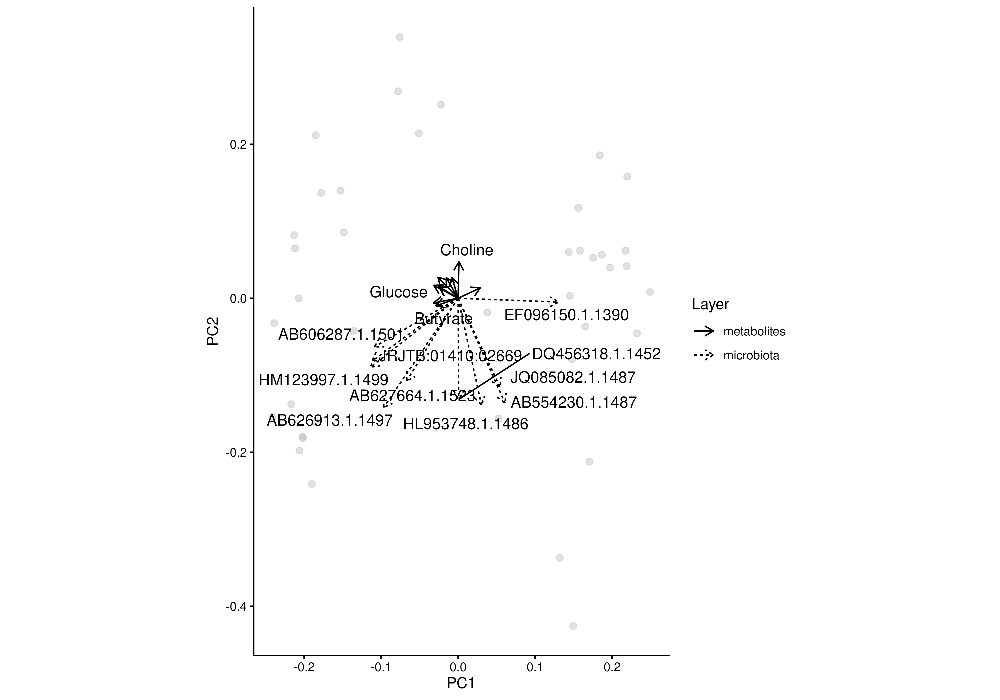
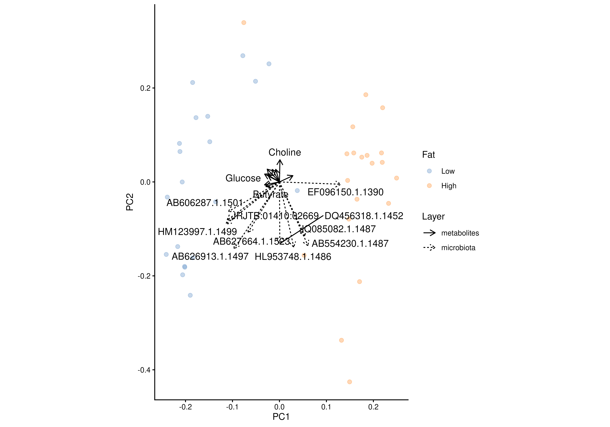
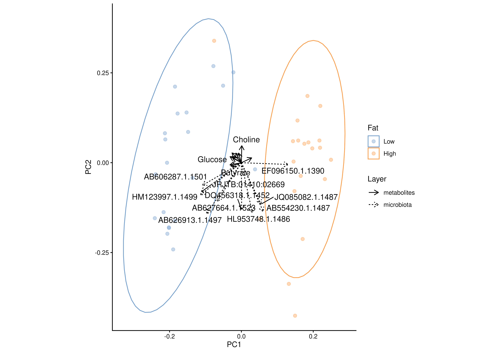
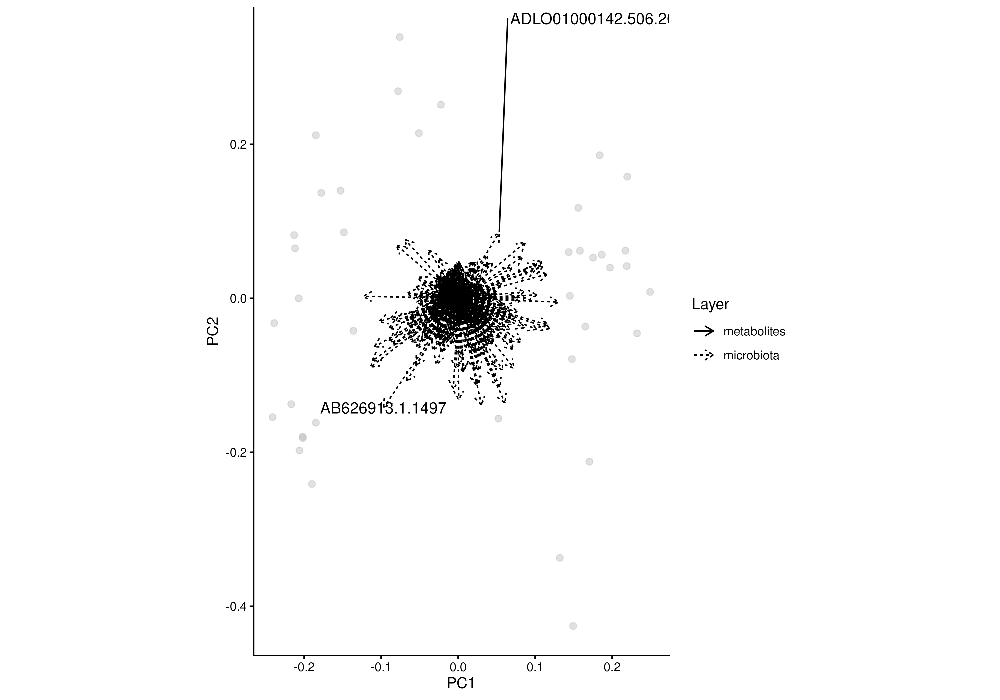
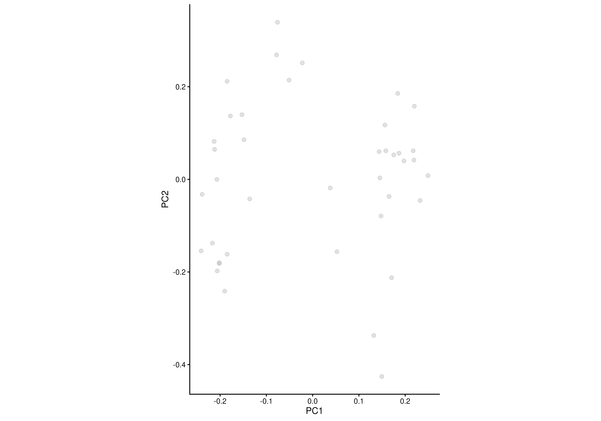
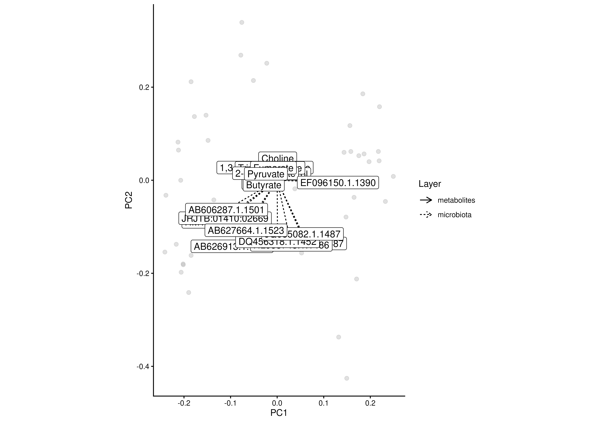

Creates a two-dimensional ordination plot from Joint-RPCA results stored in a
SingleCellExperiment or MultiAssayExperiment. In addition to the
sample ordination, feature loadings can be visualized as vectors.
plotJointRPCA(x, ...)
# S4 method for class 'MultiAssayExperiment'
plotJointRPCA(x, dimred, ...)
# S4 method for class 'SingleCellExperiment'
plotJointRPCA(x, dimred, add.vectors = TRUE, ...)A
SummarizedExperiment
or
MultiAssayExperiment
object containing Joint-RPCA results.
Additional arguments passed to
plotOrdination and to the feature-vector
plotting.
Commonly used Joint-RPCA-specific arguments include:
ntop: integer(1) or NULL. Maximum number of
loading vectors shown per data layer. The vectors with the largest lengths
are retained. Set to NULL to display all vectors. (Default: 10)
character(1): Specifies the name of the Joint-RPCA
result to plot.
logical(1) or character. If
TRUE, feature loading vectors are added. Alternatively, a character
vector can be supplied to display only features whose names match the given
pattern(s). (Default: TRUE)
A ggplot2 object.
This function is a wrapper around plotOrdination
for Joint-RPCA results. Consequently, most graphical parameters are passed
directly to plotOrdination(), including options for colouring,
grouping, faceting and adding ellipses. See
plotOrdination for a complete description of
these arguments.
Feature loadings are plotted as vectors originating from the origin. By default, only the longest loading vectors are shown for each data layer to improve readability.
data("HintikkaXOData")
mae <- HintikkaXOData
mae[[1]] <- transformAssay(
mae[[1]],
assay.type = "counts",
method = "rclr",
impute = FALSE
)
mae[[2]] <- transformAssay(
mae[[2]],
assay.type = "nmr",
method = "log10"
)
mae <- addJointRPCA(
mae,
experiments = c(1, 2),
assay.types = c("rclr", "log10")
)
#> Warning: 'experiments' dropped; see 'drops()'
#> harmonizing input:
#> removing 40 sampleMap rows not in names(experiments)
# Basic Joint-RPCA plot
plotJointRPCA(mae, "JointRPCA")

# Colour samples by metadata
plotJointRPCA(mae, "JointRPCA", colour.by = "Fat")

# Add confidence ellipses
plotJointRPCA(
mae,
"JointRPCA",
colour.by = "Fat",
add.ellipse = TRUE
)

# Show all loading vectors
plotJointRPCA(
mae,
"JointRPCA",
ntop = NULL
)

# Display only selected feature vectors
plotJointRPCA(
mae,
"JointRPCA",
add.vectors = c("Bacteroides", "Roseburia")
)

# Use boxed labels without repelling
plotJointRPCA(
mae,
"JointRPCA",
text.labels = FALSE,
repel.labels = FALSE
)
